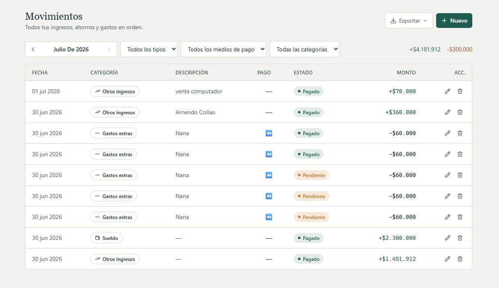
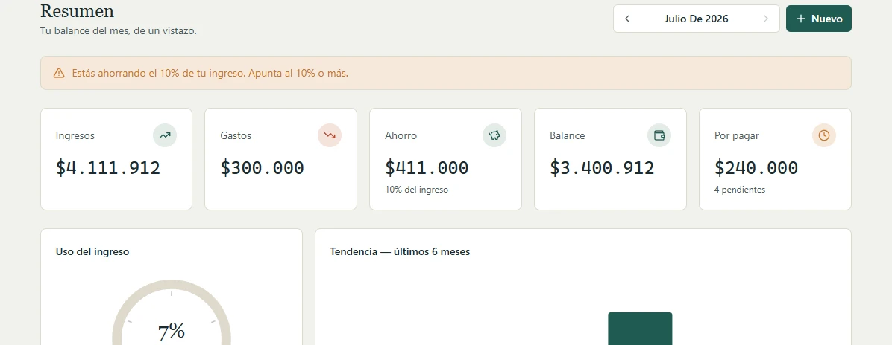
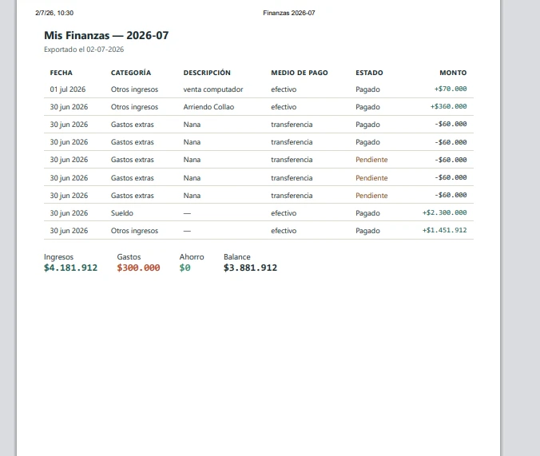
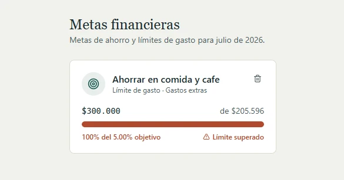

Administración de economía personal
Aplicación impulsada por IA para llevar los gastos personales de forma ordenada. Cada movimiento se clasifica automáticamente por categoría, se agrupa por mes y se compara con el comportamiento previo para mostrar dónde se está gastando más de lo previsto.
El objetivo es que registrar un gasto tome segundos y que la lectura del mes sea inmediata: resumen por categoría, tendencia y alertas cuando un rubro se sale del rango habitual.
- 01Año
- 2026
- 02Cliente
- Producto propio
- 03Industria
- Finanzas personales · IA



